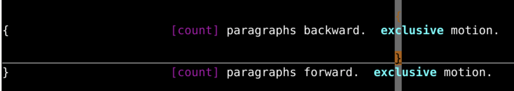
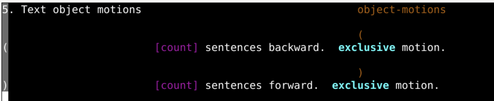

Head 移动到屏幕的顶端Middle 移动到屏幕的中间L - Low 移动到屏幕的底部
然后让光标固定，移动屏幕的相对位置
top bottom #首先下载文本找到tomsawyer.txt
git clone http://gitee.com/overmind1980/oeasyvim.git
#然后把文本打开
cd oeasyvim
vi tomsawyer.txt
[count] 翻倍:h } 来查看文档
. 区分的文字块[count] 翻倍:h ) 来查看文档